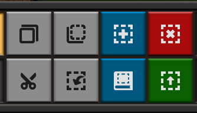

蓝图与建设机器人
蓝图功能使得这个游戏从“肝帝的游戏”转变为“休闲佛系游戏”。
熟练使用蓝图是这个游戏中后期很关键的技能，特别是解锁建设机器人后，很多建设、改拆工厂的工作都可以交给建设机器人来完成。
其UI在下方工具栏的右侧。除了蓝图，剪切(Ctrl+X)、复制(Ctrl+C)和粘贴(Ctrl+V)也是很方便的功能，适合批量调整工厂布局。
可以说，到了这个阶段，游戏才正式开始。
绿图用于批量的升级，如传送带、组装机和石炉的升级，红图用于批量的拆除。
按B键打开蓝图本，可以查看自己和地图内其他玩家的蓝图。
蓝图也可以通过蓝图代码分享给他人，点击UI处导入代码按钮，粘贴蓝图代码，稍等片刻，就可以获取到他人分享的蓝图。
本指南从此开始也会附带一些蓝图代码，一般在图片预览的下方，可以点击复制代码按钮复制到剪切板内。
如何分享和获取蓝图？
- FactorioBin： 推荐在 factoriobin 上分享蓝图代码， factoriobin 本身并没有蓝图搜索的功能，但是你可以在 searchfactoriobin 搜索factoriobin上他人分享的蓝图。 例如，需要一些传送带均分器的蓝图，可以以关键词 "balancer" 进行搜索。
- 玩家社区： 如百度贴吧，异星工厂的QQ群。